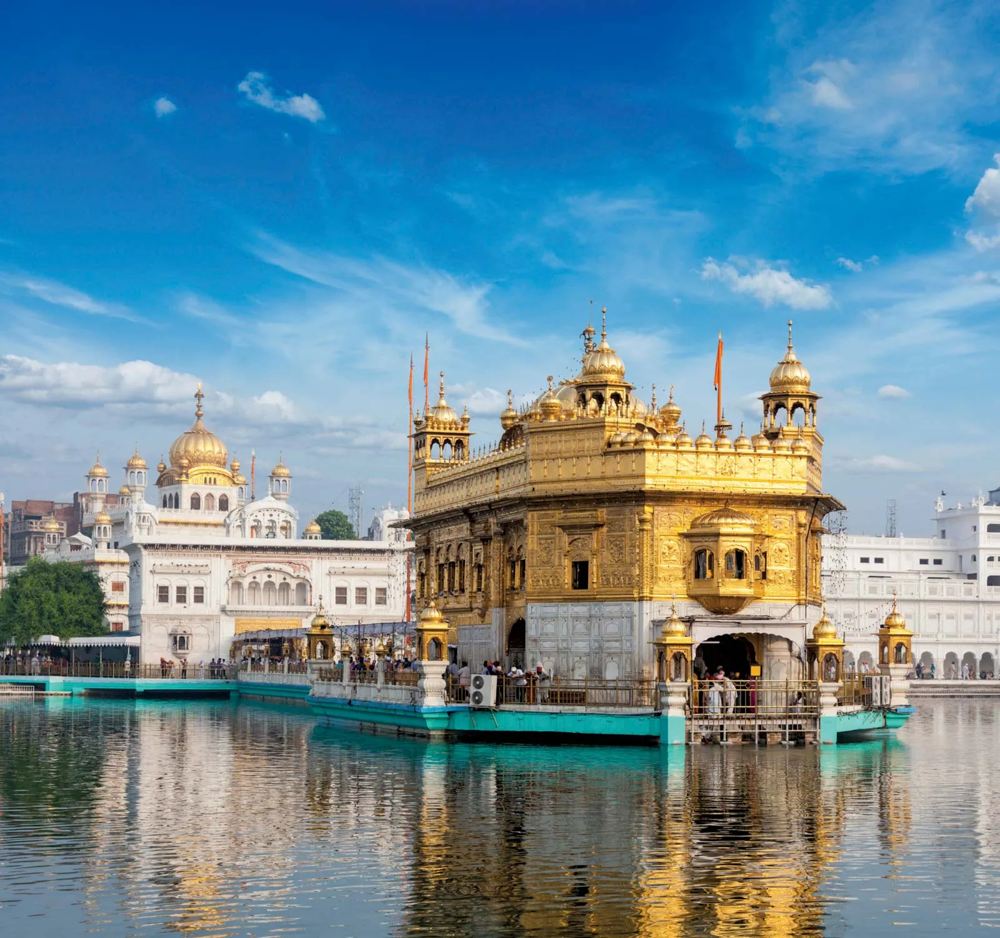
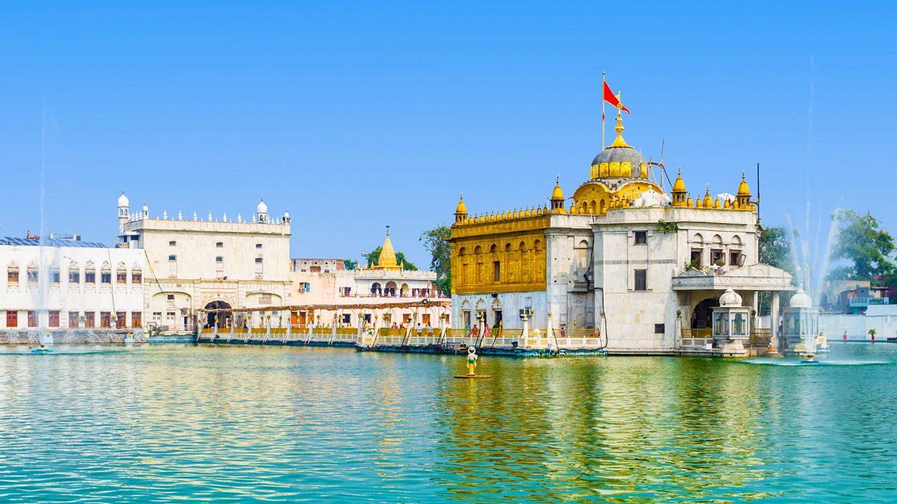
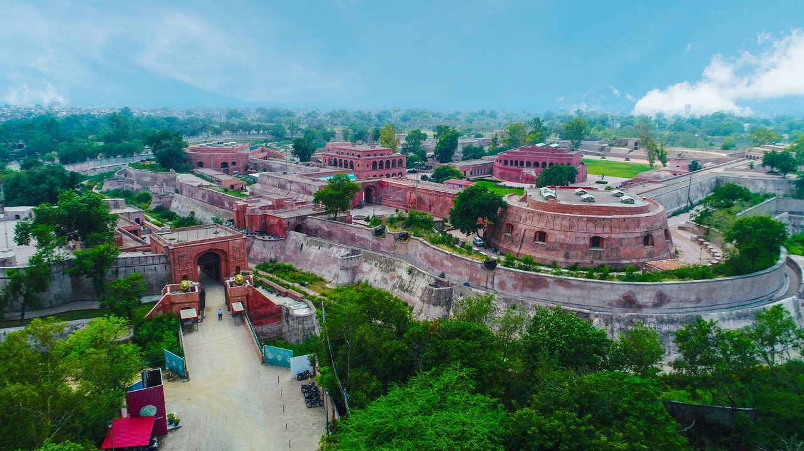
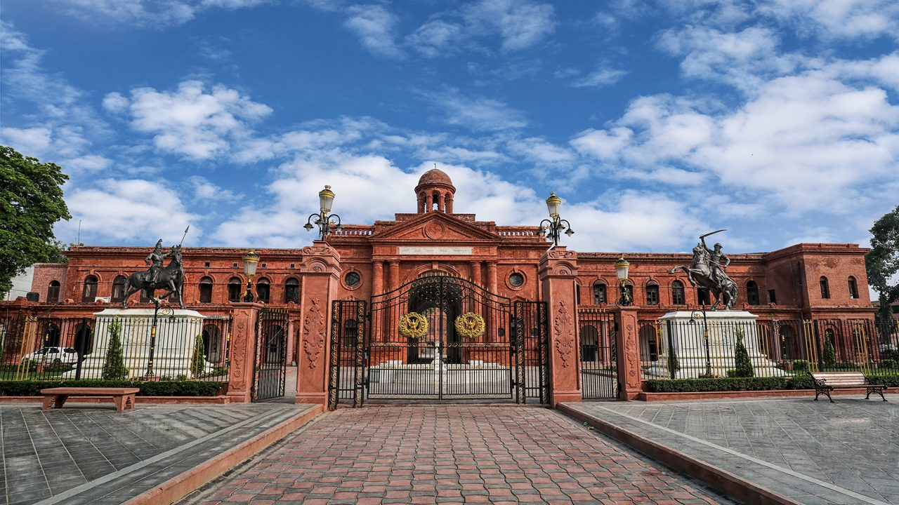
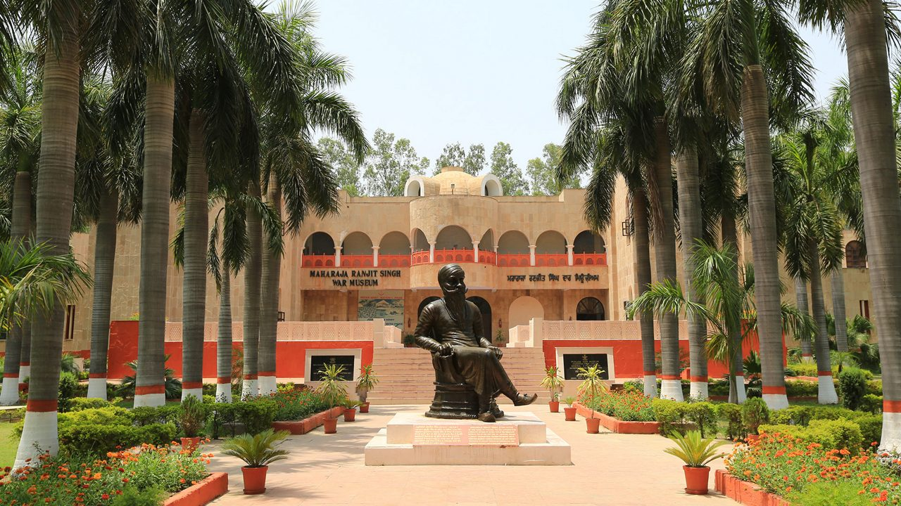
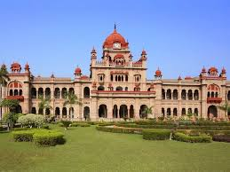

Amritsar - Gateway to Sikh Heritage and Culture
Discover Amritsar, the spiritual heart of Punjab. Renowned for its Sikh heritage, golden temples, patriotic history, and delicious cuisine, Amritsar offers an unforgettable cultural experience.

Golden Temple
The most sacred shrine of Sikhism, the Golden Temple shines with spiritual peace, shimmering gold, and a serene water tank. Don’t miss the langar for a soul-touching meal.

Jallianwala Bagh
A historic memorial site, Jallianwala Bagh commemorates the 1919 massacre and India's struggle for freedom. The bullet-marked walls are a moving reminder of sacrifice.

Wagah Border
Experience patriotic fervor at the Wagah Border ceremony held daily. The synchronized parade and cheering crowd offer a thrilling atmosphere along the India-Pakistan boundary.

Durgiana Temple
Often compared to the Golden Temple in design, this Hindu temple is dedicated to Goddess Durga and features beautiful marble architecture and spiritual ambiance.

Gobindgarh Fort
This 18th-century fort has been transformed into a cultural center offering museums, live performances, traditional crafts, and Punjabi cuisine in an immersive environment.

Partition Museum
Located near Town Hall, this museum narrates the tragic partition of India through exhibits, personal stories, and artifacts that reflect the region’s history and resilience.

Maharaja Ranjit Singh Museum
Dedicated to the Lion of Punjab, this museum showcases his contributions, weapons, paintings, and artifacts, all housed in his former summer palace amid scenic gardens.

Khalsa College
Known for its stunning Indo-Saracenic architecture, Khalsa College is more than an educational institute—it’s a historical landmark that echoes the grandeur of colonial Punjab.
Tour Details
- Duration: 3 Days / 2 Nights
- Best Time to Visit: October to March
- Price: ₹7,500 per person
- Includes: Accommodation, Sightseeing, Local Transport, Breakfast